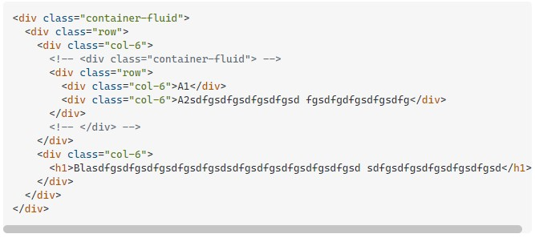
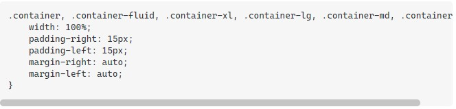
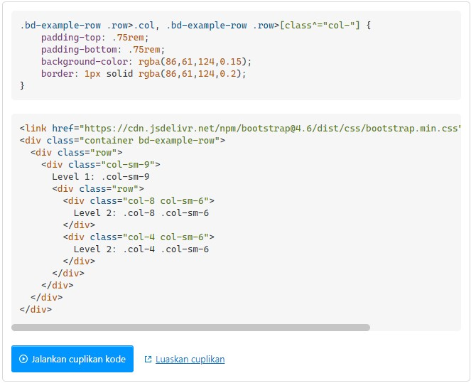

Saya menggunakan bootstrap 4.6.0 dan bertanya-tanya apakah penggunaan selanjutnya didukung.
Semuanya berfungsi, tetapi saya tidak boleh menggunakan wadah lain:

Apakah ada kekurangan untuk penggunaan ini? Memeriksa bootstrap .container-fluid, hanya
memiliki gaya ini:

Tidak perlu menggunakan containeratau container-fluidkelas untuk membuat baris bersarang.
Dokumentasi: https://getbootstrap.com/docs/4.6/layout/grid/#nesting

Perbedaan antara cairan .container dan .container adalah bahwa .container memiliki aturan gaya lebar maksimum yang diterapkan. Ini diatur pada 1170px yang ketika Anda menambahkan padding 15px ke kiri dan kanan, memberikan lebar kolom total 1200px. Margin:0 auto dalam gaya yang Anda berikan berarti kolom .container 1200px dipusatkan secara horizontal di viewport. Ini adalah satu-satunya perbedaan di antara mereka dan tidak apa-apa untuk menggunakan satu atau yang lain. .container-fluid identik kecuali tidak memiliki gaya max-width dan mengambil lebar penuh dari viewport. Yang Anda lakukan hanyalah menerapkan baris bersarang di kolom Anda, yang diperlukan untuk mengimbangi bantalan kiri dan kanan kolom. ini benar- jika tidak, Anda akan memiliki talang kiri dan kanan 30 px. Tetapi Anda hanya memerlukan satu div induk dengan kelas .container atau .container-fluid.
Hanya baris terluar yang membutuhkan wadah. Seperti yang ditunjukkan dalam dokumen untuk " Bersarang ", baris dalam ditempatkan langsung di dalam kolom. Selain itu, dokumen penampung menyatakan... "Meskipun container dapat disarangkan, sebagian besar tata letak tidak memerlukan container bersarang."